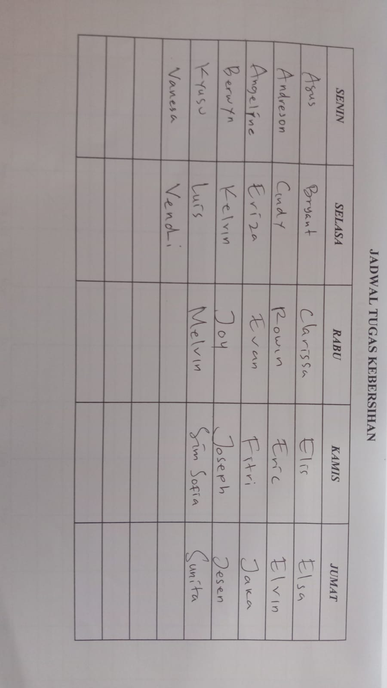

Kelas 9B SMP Maha Bodhi... Kami adalah sebuah tim, kelompok, dan keluarga yang dimana sebagian besar dari kami
berasal dari kelas 7D.
Kelas kami terkenal dengan kelas paling ribut diantara angkatan kelas 9 SMP Maha Bodhi (Dan mungkin semua angkatan
di SMP Maha Bodhi (Maaf teman sekelasku, tapi aku tidak akan berbohong disini.)
Kami juga mengambil beberapa foto untuk kenang-kenangan dan menjadi foto profil dari Group WA Kelas.
Seperti 10 foto berikut ini :
Kelas kami memiliki total 28 siswa, dan memiliki struktur kelas sebagai berikut :
Ma'am Hermai Sesebra sebagai Wali Kelas
Winson Xue sebagai Ketua Kelas
Joseph Ang sebagai Wakil Ketua Kelas
Kyushu sebagai Sektretaris Kelas
sebagai Kesehatan bagian Laki-Laki
sebagai Kesehatan bagian Perempuan
sebagai Keamanan Kelas
sebagai Keamanan Kelas
sebagai Kebersihan Kelas
sebagai Kebersihan Kelas
Dan kami memiliki jadwal Piket sebagai berikut.
Senin : Agus, Andreson, Angeline, Berwyn, Kyushu, Vanessa
Selasa : Bryant, Cindy, Eriza, Kelvin, Luis, Vendi
Rabu : Clarissa, Rowin, Evan, Joy, Melvin
Kamis : Elis, Eric, Fitri, Joseph, Sim Sofia
Jumat / Jum'at : Elsa, Elvin, Jaka, Jesen, Sunita.

Dan disini saya juga mewujudkan keinginan teman saya untuk membuat "List Anak Top Paling Bising dan Sekaligus
Paling "Lawak" Di kelas 9B"
Mulai dari nomor 1 :
Jesen Fernando (Dia sendiri yang memintanya)
Berwyn
Agus
dan terakhir ada Andre (Kocak nih orang).
Dan saya juga disini memiliki beberapa foto yang saya ambil ketika didalam dan diluar kelas.